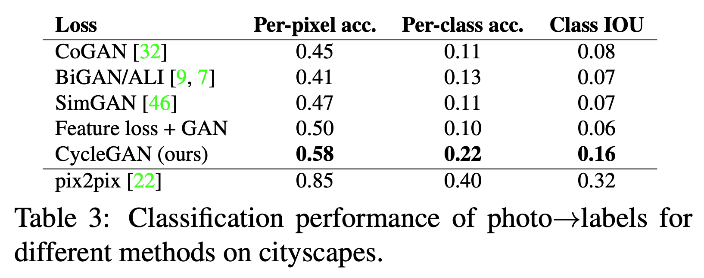

Overview
Paper approaches Image to Image Translation problem when training dataset lacks aligned image pairs (inputs vs exact expected output). Introduces 'Cycle Consistency Loss' component to combat mode collapse.
Method
- Uses GANs to generate the translated image from domain X to domain Y
- Using unconditional GAN loss without constraining on input content would yeild in 'Mode Collapse' problem
- Mode Collapse - Generator G learns to predict just one realistic looking output in domain Y, ignoring input
- Cycle Consistency - Employ second Generator F to learn backward mapping, to convert back output to domain X
- F forces G to output diverse, domain Y stylized input with content intact
Full Objective
- Adds unconstained GAN loss from both G and F and their Discriminators Dx and Dy
- Adds cycle consistency loss component enforcing reconstruction of the original image
Training Details
- To stabilize training, use least squares loss instead
Analysis
- Ablation study on the components of the loss function has been done supporting cycle consistency loss
- Performance when compared to similar (unpaired) methods is better
- pix2pix outperforms because of paired images in their formulation, method. Becomes upperbound for this method.

Comparision to similar methods and pix2pix
Results